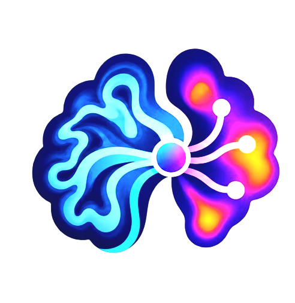
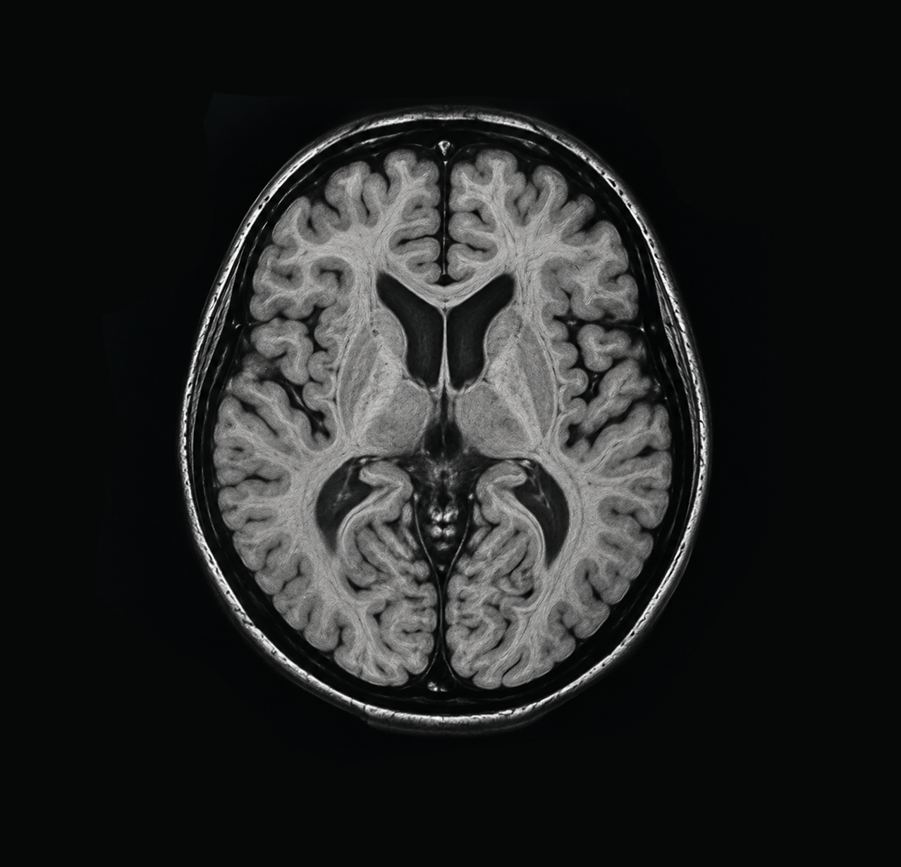
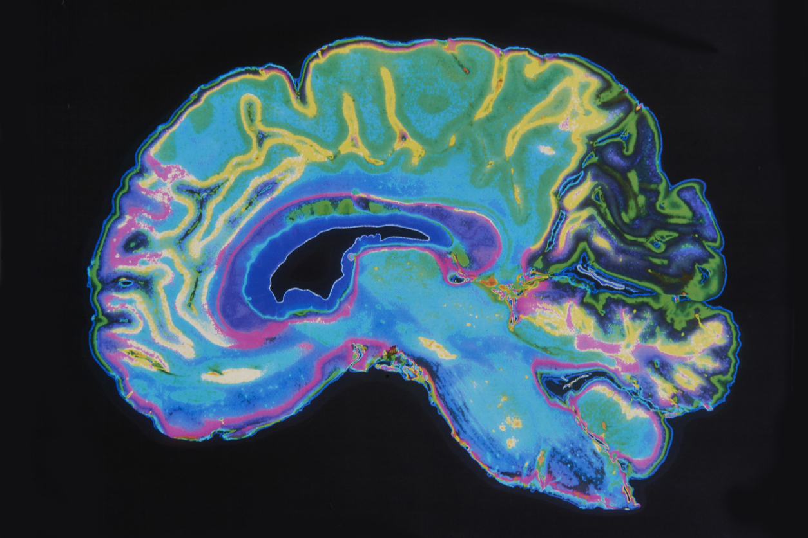

ALZFUSION+
Understanding
Alzheimer's
Through AI
Exploring Alzheimer's disease through multimodal brain imaging and deep learning.


MRI + PET
Combining complementary imaging information through multimodal fusion.
Two perspectives. One brain.
MRI provides structural information, while PET provides complementary metabolic information. Our system explores how these modalities can be combined using multimodal deep learning.
99.2%
Cross-modal alignment accuracy across combined latent spaces.
+14 Mo.
Earlier detection of cognitive decline markers prior to clinical onset.
The AlzFusion Intelligence Pathway
A structured multi-phase pipeline moving from multi-site raw clinical ingestion to clinical-grade predictive staging.
Multimodal Ingestion
Simultaneous processing of structural MRI (T1-weighted) and metabolic FDG-PET scans mapped to standardized spatial grids.
Cross-Attention Fusion
Late-stage deep transformer architecture fusing localized structural brain atrophy maps with regional metabolic drop-off gradients.
Prognostic Staging Output
Delivering high-confidence diagnostic indicators and cognitive decline markers up to 14 months prior to clinical symptom onset.